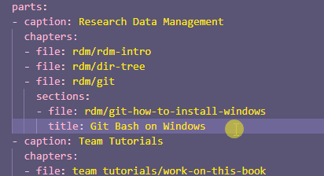

Updating this book#
This page outlines a simple workflow for creating, updating, and “pushing” content to this book.
This guide assumes some familiarity with Git, and GitHub but will try to cover all the steps.
File hierarchy primer#
How the handbook is structured is governed by the _toc.yml table of contents file in the /handbook directory. The handbook is arranged in parts, defined with captions, each part is then arranged in chapters, defined by the directory and filename of the the markdown document to be rendered.
To keep everything tidy each part has a directory, and larger chapters within each part have their own directory within the respective part directories.
Work on this handbook locally#
Clone the repository#
Choose an area on your local (usually C) drive. Optionally, you can choose the target directory to work in. Run the following to clone the repository locally:
git clone https://github.com/Data-Curators-Royce-Institute/royce-data-handbook.git path-to-target-directory
Activate your environment#
Activate your virtual environment for building the Jupyter Book in the royce-data-handbook directory that will be cloned to your chosen directory.
conda activate your-env-name
Check the environment is working#
Type in the following to check that your environment is working as it should:
jupyter-book
You should get the Jupyter Book help menu
Start working on your branch#
Create a new branch:
git branch <your-branch-name>
Switch to your new branch:
git checkout <your-branch-name>
Create files#
Create the markdown file (your-filename.md)that will contain your article in the relevant folder, or make a new folder if you are defining a new section.
Index the new files#
To index the new files you will have to add them and their relative path to the _toc.yml file.
Our table of contents follows a parts → chapters → sections hierarchical structure.

A chapter can be a standalone page or comprise of sub-pages like with the Team Tutorials part, having a chapter defined in the file work-on-this-book.md, comprised of the sections notes-on-jb.md, how-to-install-jb.md and contribution-workflow.md (the file that is page is written in!)
You can find out more in the official Jupyter Book documentation, here.
Let’s define a file in the Research Data Management part
Open the
_toc.ymlfile - this is in thehandbook/folderGo to
- caption: Research Data ManagementScroll to where the new
- captiondefining the next part is.Start a new line between the end of the
- caption: Research Data Managementpart and the next partMake sure you have appropriately indented and are in line with the
chaptersWarning
Indentation is important in YAML so make sure you are indenting correctly, otherwise you will get an error when attempting to build the book
Type
- file: path-to-file/your-filenameAttention
Note the omission of the Markdown file extension
.mdYou are done, your new page should be indexed!

Build the book#
Navigate to the directory where our handbook/ folder is located and type the following:
jupyter-book build handbook/
You can check if your page has been built and indexed correctly by opening up index.html, the path to it should be handbook/_build/html/.
Update live handbook#
To check which files are tracked or untracked (usually new files in the root directory) in your git tree, type:
git status
You will get a terminal output like so:

Add files to the git tree and commit your changes#
We will follow these basic rules for adding files and committing changes to the git repository:
If you have added a new file add and commit individually
If you have changed a file add and commit individually
If a bulk of files such as the build files have been generated then add them and commit them in one go
To add a file to your git tree type:
git add path-to-file/filename
To commit a file to your git tree type:
git commit -m 'commit message'
Commit message convention is to write things in the present tense, a commit message could be something like ‘Add filename.md’ or ‘Edit filename.md with better workflow description’
Attention
The commit message is important for your reviewer to understand what you did, so try to keep it short but descriptive
Add and commit a bulk of files#
Once you have added and committed your individual files, check that you have not left out anything important by checking what has been tracked and not.
Type the following:
git status
Usually the files you would want to bulk add are in the _build/ directory.
To bulk add files, type:
git add .
Since these are usually from the _build directory, the commit message could be something like:
git commit -m 'build handbook'
Push changes to the repository#
To push changes to the remote repository on GitHub, type the following (make sure you are in your branch):
git push
Usually, your branch will be untracked, so you’ll receive a prompt with a message to push the whole branch to the remote repository to type:
git push --set-upstream origin <your-branch-name>
Create a pull request on the repository#
Now that you pushed your branch to the remote repository head to the repository URL, . You will see a message like,
<your-branch-name> has recent pushes ...
Press the button Compare & pull request
You will be redirected to the Open a pull request page. Give it a descriptive title and expand in the comment section if you need further explanation, and press the Create pull request

Check the book builds on our GitHub repository#
We have set up a workflow that builds the contents of the book on the repository side to check that everything works well before the handbook on your branch is merged, built and deployed to GitHub Pages. Check that it does build on the remote repository:

Update your local repo#
Once your branch has been merged move to the main branch and do the fetch-pull-delete procedure we will explain below.
Git fetch-pull#
Move to the main branch
git checkout main
Use fetch to check for updates on the remote repository
git fetch
Pull the latest version of the main branch so that your local repository matches to the remote repository
git pull
(Optional) Delete your branch#
To keep everything tidy we recommend that you delete your local branch that was just merged to the remote repository. We will be doing the same on the remote side so that only the main and gh-pages branches exist on the remote repository.
git branch -d <branch-name>